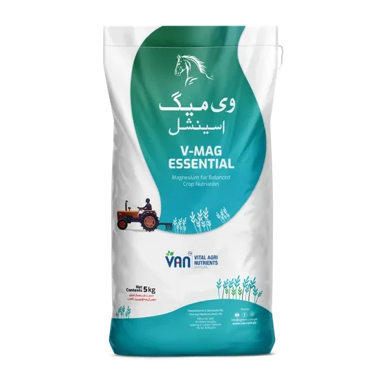

Crop plans / Cereals & field crops / Wheat
Crop programmeWheat. Per acre, stage by stage.
VAN’s published wheat programme runs across 5 stages, from land preparation to grain formation. It uses 7 nutrient bands and mixes VAN products with commodity urea. Everything below is transcribed from the published plan.
When did you sow?
Answer this and the page orders itself around your field. Skip it and nothing is lost, every rate, quantity and method below is exactly where it was.
7 bands, 5 stages.
The programme matrix. Every band across every stage, per acre, with commodity inputs greyed and every product shown as its real pack.
| Band | Land Preparation | Germination | Early Growth | Grand Growth | Grain Formation & Maturity |
|---|---|---|---|---|---|
| Phosphorus |  |  | |||
| Nitrogen |  | Urea N 46% · 1 bag · 50 kg Side Dressing/Fertigation | Urea N 46% · ½ bag · 50 kg Fertigation | Urea N 46% · ½ bag · 50 kg Fertigation | |
| Potash |  |  | |||
| Secondary Nutrient |  |  | |||
| Soil Amendment |  |  | |||
| Micronutrients |  |  | |||
| Foliar |   |  |
Rates are per acre. “1 bag” means 1 bag of the size printed under the rate. Greyed names are commodity inputs VAN does not manufacture.
The 5 stages, their growing-degree-days and their days after sowing are in the stage table below. The same published table the block at the top of this page reads to work out where your crop is.
What to buy for your acres.
Tick the stages. Set your acres. Send the list.
Counts are the published per-acre rates added up across the stages you tick, multiplied by your acres. VAN confirms the final price, availability and delivery on WhatsApp.
- Green Phosphate50 kg bag · Land Preparation1bag · 50 kgYour choice:
Same bag size, different bag. Fusion Phosphate is TSP at 46% P₂O₅. About 44% more phosphate per bag than Green Phosphate’s 6-32-0, and no nitrogen with it. Green Phosphate is the humic-coated acidic grade, built for alkaline ground. The plan’s number of bags does not change if you switch; what you put on the field does. At 50 kg a bag: Green Phosphate 16.0 kg P₂O₅ + 3.0 kg N, Fusion Phosphate 23.0 kg P₂O₅ and no nitrogen.
- V. Ammonium Phosphate (V-Phosphate)10 kg bag · Early Growth1bag · 10 kg
- Vital Urea25 kg bag · Land Preparation½bag · 12.5 kg
- Fusion Potash25 kg bag · Land Preparation½bag · 12.5 kg
- Vital Potash20 kg bag · Grand Growth½bag · 10 kg
- Green Sulfur1 kg bag · Germination, Early Growth2bags · 2 kg
- V-Mag Essential5 kg bag · Early Growth, Grand Growth1bag · 5 kg
- Humi Grow8 kg bag · Land Preparation1bag · 8 kg
- Humi Grow Plus4 L pack · Germination1pack · 4 L
- V-Transform3 kg bag · Germination1bag · 3 kg
- VL-Boron1 L pack · Early Growth1pack · 1 L
- VL-Potash Liquid1 L pack · Early Growth, Grand Growth2packs · 2 L
- VL-Micromix1 L pack · Early Growth1pack · 1 L
- Tornado0.5 L pack · Grand Growth2packs · 1 L
- Urea not a VAN productcommodity input · 50 kg bag · Germination, Early Growth, Grand Growth2bags · 100 kg
The message carries the list above. Add your district and VAN replies with price and the nearest dealer.
The dynamic nutrition creator.
Set your acres and every quantity scales with it, then enter your soil report, or pick your district and it fills from the Punjab survey's own median, and the quantities move with what your ground actually shows. Sourced straight from VAN's own wheat calculator, not estimated.
Which list to use: the acres figure is shared with the shopping list above. The shopping list is the published plan; this list is VAN’s calculator, and it is the one to use if you have a soil report. Where the 2 differ, the totals below show a range.
Set your acres. Watch the plan scale.
Every quantity below comes straight out of VAN's own wheat calculator, scaled by your acres, not estimated. Add your soil test below, or just pick your district, to adjust it further.
- Vital Urea25 kg pack0.512.5 kg total
- Ureanot a VAN product50 kg pack2100 kg total
- Green Phosphate50 kg pack150 kg total
- Vital Potash20 kg pack0.510 kg total
- Fusion Potash25 kg pack0.512.5 kg total
- VL-Potash1 L pack22 L total
- VL-Micromix1 L pack11 L total
- VL-Boron1 L pack11 L total
- V-Transform3 kg pack13 kg total
- V-Mag Essential5 kg pack15 kg total
- Green Sulfur1 kg pack22 kg total
- Humi Grow8 kg pack18 kg total
- Humi Grow Plus4 L pack14 L total
- Tornado0.5 L pack10.5 L total
A figure written as a range has 2 VAN documents behind it: VAN's wheat calculator sheet and VAN's published wheat plan, which do not carry an identical product list on this crop. Which of the 2 is higher depends on the nutrient. Both ends are arithmetic on VAN's own printed analyses. Nothing here is estimated.
Enter what your soil report says for any of these. The plan above will add extra where your land is genuinely short. Leave a row blank if you have no reading for it.
VAN confirms the final price, availability and your nearest dealer on WhatsApp.
What goes on, and what comes off.
Every season takes nutrients out of the field in the harvest. The programme puts some back. This is both sides of that, per acre, for wheat, and the gap is the reason this site argues about soil the way it does.
| Nutrient | The programme puts on | 60 maunds takes off | Balance |
|---|---|---|---|
| Nitrogen (N) | 54.4–55.4 kg | 45.6 kg | +8.8–+9.8 kg |
| Phosphate (P₂O₅) | 16.0–20.4 kg | 19.2 kg | -3.2–+1.2 kg |
| Potash (K₂O) | 11.4–12.0 kg | 11.5 kg | -0.1–+0.4 kg |
| Sulfur (S) | 3.2 kg | 4.1 kg | -0.9 kg |
Why some figures are a range. Where a figure is shown as a range, it is because VAN holds 2 documents for this crop: the crop calculator sheet and the published crop plan. They do not carry an identical product list, so they do not deliver an identical kilogram of nutrient. Both ends are VAN’s own arithmetic on VAN’s own figures and neither is estimated.
Per acre, per season. A minus means the crop takes more of that nutrient off the field than the programme puts back. The difference comes out of what the soil already holds, and does so every season. It is not a fault in the plan: no crop nutrition programme is written to replace everything a harvest removes, and this is why a soil test matters more than any published rate.
Not counted on the left: Humi Grow, Tornado. The plan gives these no nutrient analysis (“Soil Conditioner”, “Bio-stimulant”), so they are left out of the total rather than given a figure they do not have. The real total is therefore higher than shown.
Liquid packs are counted at 1 litre to 1 kilogram. The plans give the pack in litres and the analysis as a percentage without saying whether it is by weight or by volume, so a density has to be assumed and 1.0 is it. Every liquid here is a micronutrient or a foliar at a litre or two an acre, so it moves the totals by a fraction of a kilogram.
The table above is what physically leaves the field. The crop takes up more than that and leaves the rest standing in the residue. At 60 maunds, wheat takes up about 77 kg N, 26 kg P₂O₅, 79 kg K₂O, against what the table shows leaving. Whether that difference goes back into your soil or onto a trolley is decided at harvest, not at sowing.
Where these 2 sides come from, because they do not come from the same place. What goes on is VAN's own published wheat plan. Its rows, its rates, its printed analyses. Multiplied out. Nothing is modelled. What comes off is not VAN's: no Pakistani nutrient-removal table exists on the public record, so these are the IPNI nutrient uptake and removal tables, metric edition 01/15 (North America), for “Wheat (winter) grain / Wheat straw”, per tonne of grain. IPNI's own note applies and is worth repeating: “Reported nutrient removal coefficients may vary regionally depending on growing conditions. Use locally available data whenever possible.” A Pakistani measurement would replace these outright, and should.
How much water the wheat season needs.
A nutrition plan only works if the crop gets its water. This panel shows what the season needs, what rain normally gives, and what must come from irrigation.
No sowing date given, so this counts from the middle of VAN’s published window (October). Answer the question at the top of the page and it uses your date instead.
Pick your district and the figures appear. They come from the nearest weather station with published normals, and the page tells you which one and how far away it is.
- It is not measured with the full equation. FAO’s standard method needs humidity, wind and solar radiation. The Pakistan Meteorological Department normals this site carries have temperature and rain and not those, so the reference figure uses Hargreaves, the method FAO itself gives for exactly this case. It is an estimate.
- It is probably on the low side for Punjab. FAO’s crop coefficients are published for a sub-humid climate. Its own caption says relative humidity around 45% and light wind. Punjab in the dry season is drier and windier than that, and FAO’s own correction for arid climates raises the coefficient. Applying that correction needs humidity and wind data this site does not have, so the figure above is closer to a floor than a ceiling.
- It is what the crop uses, not what you have to pump. Nothing here allows for what a watercourse loses on the way, for water running past the roots, or for the extra needed to leach a salty soil. And the rain shown is all the rain. How much of a July downpour a field actually keeps depends on your soil and your slope, and there is no honest way to work that out from here.
Method: FAO Irrigation and Drainage Paper 56. Crop evapotranspiration, Table 11 (lengths of crop development stages) and Table 12 (single crop coefficients). Temperature and rainfall: WMO Climatological Standard Normals 1991–2020 (1991–2020), Pakistan Meteorological Department. Normals, not this season. What a month is usually like, averaged over 30 years.
You pay for the whole bag. About a quarter of the nitrogen in it feeds the crop.
Across Pakistan's cropland, roughly 1 kg of applied nitrogen in 4 is taken up by the crop. In the United States it is about 72 in 100. The rest of ours leaves as ammonia gas, drains past the roots as nitrate, or goes to gas in waterlogged ground. The farmer pays for that nitrogen at the depot and the crop never gets it.
Source · Lassaletta, Billen, Grizzetti, Anglade & Garnier (2014), Environmental Research Letters 9:105011. Corroborated by Shahzad et al. (2019), Nature Sustainability.
Why it goes
Above pH 8, and about 69 in every 100 of Punjab's samples are above pH 8, urea left on the surface turns to ammonia and leaves before a root can reach it. Calcareous ground binds phosphate with free calcium and takes most of it back. The same alkalinity locks up zinc.
The soil, measured 770,160 times →Where it was placed, when it was split, whether the water followed it, and what it was mixed with. None of that is printed on a bag, and it is where a large share of the loss happens.
We are not going to tell you how the quarter splits between those two. Nobody has measured that for Pakistan, VAN included, and a number invented for the sake of a tidy page is worse than no number.
What you can do, in the order it costs you
- 1Change the form.A coated urea releases over days instead of all at once on a hot surface. This is the rung that costs money, and it is deliberately first only because it is the largest.
- 2If you cannot change the product, change the method.Placed in the band, drilled at sowing, or side-dressed and watered in, the same bag puts more of its nitrogen into the crop than it does broadcast on a dry alkaline surface. The bag and the price are the same. Only the placement changes. VAN publishes no figure for how much more, because it has not measured one in a trial it can name.The same holds for phosphate, DAP included: the closer it goes to the root, the less of it the soil locks up before the root arrives.The 5 methods, and what each one does →
- 3If you irrigate through the line, level the field first.On unlevelled ground the water, and everything dissolved in it, reaches the low end of the field first and the high end last or not at all. Fertigation spreads the nutrient more evenly once the ground is level, and the levelling is doing part of that work, not the fertigation alone. No figure is put on it here, because VAN has not measured one in a trial it can name.
- 4Change the moment. Split it, and follow the water.Nitrogen given in one early dose sits on the field waiting to be lost. Split against the crop's own demand and follow the irrigation with it.
- 5Build the tank mix properly.A correct mix for foliar and fertigation drives uptake in its own right. 4 rules carry most of it.Fill the tank half full first, and keep the agitator running. Products go in one at a time, each one dispersed before the next arrives. Adding to an empty tank, or all at once, is how a mix curdles.Add in order of how hard each one is to disperse: wettable powders, then water-dispersible granules, then suspensions and flowables, then anything already in solution, then emulsifiable concentrates, and adjuvants and surfactants last of all.Jar-test anything you have not mixed before. The same products in the same order, at the same ratio, in a clear jar. Leave it 15 minutes. Curdling, flakes, a layer on top or sludge at the bottom means it will do the same in a 200-litre tank, and you will find out with a blocked boom.Spray it the day you mix it, and not into the middle of the day. A mix left standing separates, and a leaf takes far less in heat with the stomata shut. Early morning or late afternoon.This is general spray practice, not a VAN compatibility chart. Which VAN products must not share a tank, at what concentration, and what your own water does to them are answered product by product by the agronomy team, and in full for partners.
The farm discipline simulator.
Everything above is the nutrition lever. Set a yield target and score how the season is actually being run, sowing time, irrigation timing, seed quality and more, to see what is really holding yield back.
Walk the season, one stage at a time.
Each stage shows its growing-degree-days, days after sowing and calendar dates for 3 sowing dates, and the products the published plan puts on at that stage, per acre.
Land Preparation
| Sown Oct 20 | Sown Nov 1 | Sown Nov 20 |
|---|---|---|
| Before Oct 20 | Before Nov 1 | Before Nov 20 |
Soil preparation, incorporation of P, K, organic matter, basal N (Vital Urea). This is not a crop growth stage but a management stage.
Rates are per acre. “1 bag” means 1 bag of the size printed under the rate. Greyed names are commodity inputs VAN does not manufacture. Growing degree days are counted on a base of 10 °C, only the heat above 10 °C is added up, which is why a whole Punjab wheat season comes to about 1,400 and not to the roughly 3,000 a base of 0 °C would give. The calendar dates are worked from the days-after-sowing column, not from the degree days. They assume sowing between October 15 and November 30 (normal window for Punjab irrigated wheat); for early sowing (Oct 1-14) subtract 7-10 days, for late sowing (Dec 1+) add 10-14 days.
GDD, days after sowing, and the calendar for 3 sowing dates.
The same 5 stages the walk above steps through. Laid out so a season can be read in one glance. This is the table the block at the top of the page reads.
| Stage | GDD (base 10 °C) | DAS | Sown Oct 20 · normal | Sown Nov 1 · late-normal | Sown Nov 20 · late | Key events |
|---|---|---|---|---|---|---|
| 1 · Land Preparation | n/a | Before sowing | Before Oct 20 | Before Nov 1 | Before Nov 20 | Soil preparation, incorporation of P, K, organic matter, basal N (Vital Urea). This is not a crop growth stage but a management stage. |
| 2 · Germination | 0–150 | 0–10 | Oct 20–Oct 30 | Nov 1–Nov 11 | Nov 20–Nov 30 | Seed imbibition, radicle emergence, coleoptile emergence. Apply first N top-dress (commodity urea) at 8-10 DAS if soil moisture is adequate; otherwise wait for first irrigation. |
| 3 · Early Growth | 150–450 | 10–25 | Oct 30–Nov 14 | Nov 11–Nov 26 | Nov 30–Dec 15 | Emergence of first true leaf; beginning of tiller formation. Critical period for zinc deficiency symptoms (especially in alkaline soils). |
| 4 · Grand Growth | 450–900 | 25–50 | Nov 14–Dec 9 | Nov 26–Dec 21 | Dec 15–Jan 9 | Maximum tiller formation and leaf expansion. The period of highest nutrient demand and the window for mid-season N applications. Foliar K and micronutrient sprays are applied here. |
| 5 · Grain Formation & Maturity | 900–1400+ | 50–120 | Dec 9–Feb 8 | Dec 21–Feb 20 | Jan 9–Mar 10 | Boot stage, anthesis, grain fill, dough stage and maturity. Minimal N applications after boot; no new nutrient applications after grain fill begins. |
Growing degree days are counted on a base of 10 °C, only the heat above 10 °C is added up, which is why a whole Punjab wheat season comes to about 1,400 and not to the roughly 3,000 a base of 0 °C would give. The calendar dates are worked from the days-after-sowing column, not from the degree days. They assume sowing between October 15 and November 30 (normal window for Punjab irrigated wheat); for early sowing (Oct 1-14) subtract 7-10 days, for late sowing (Dec 1+) add 10-14 days.
Nutrient deficiency symptoms.
These descriptions are based on standard phenotypes observed in Punjab's alkaline soils. Symptoms progress rapidly under stress (drought, high pH, cold). Identification allows corrective foliar or fertigation intervention.
5 ways the bag reaches the crop, and they are not interchangeable.
Broadcasting, placement, side dressing, fertigation and spray are 5 different methods. The plan names which one for every row.
▸ Tap a method to read it
Spread evenly over the soil surface, before or at sowing, and worked in by tillage or by the first irrigation.
One product rule overrides the table. Vital Urea is a coated slow-release urea and is applied by broadcasting, side dressing or drilling, never by fertigation. The fertigation rows in the nitrogen band are commodity urea, which is a different material.
What this plan does not tell you.
These are per-acre programmes, not a prescription for your field. A nutrition plan is built on a typical crop and a typical soil. It is not a substitute for a soil test.
VAN publishes no yield claim for this programme. We publish what to apply, at which stage, by which method.
This programme is indicative. It is built on best practice and on the nutrient requirement of the crop, not on your field. VAN prepares farm-specific plans against a grower's own soil analysis, yield target and the other variables that decide a rate.
The products and rates on this page come from VAN’s published wheat plan and from VAN’s own wheat calculator. Where the 2 differ, the page shows a range. Methods and pack sizes are read directly out of the published plan PDF.
Ask for one on WhatsApp, or write to kisan@van.com.pk.
Send your soil analysis, your yield target and your district. VAN’s agronomy team builds the plan against your field, not a typical one.